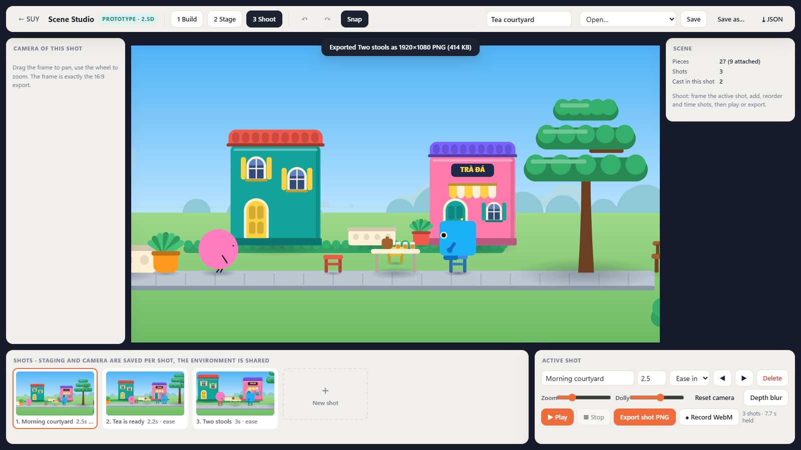
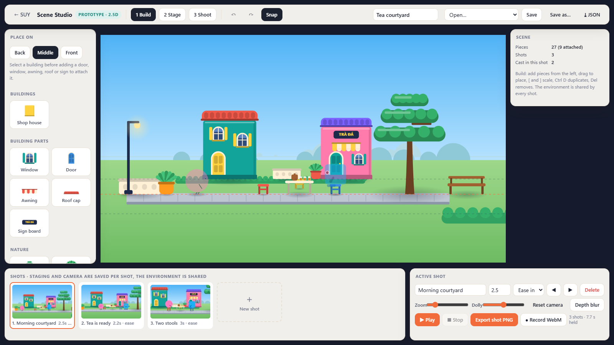
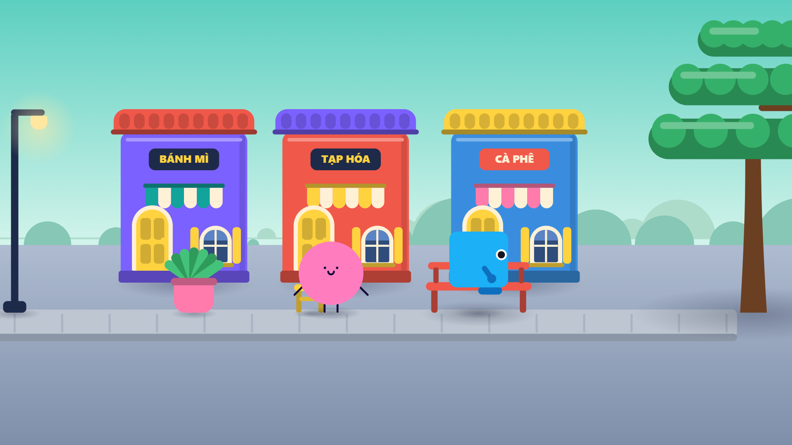

Create your own building blocks
Build characters, props, and components that express your ideas. Keep refining and reusing them as your visual world grows.
Independent software studio · In development
We’re building a workspace for designers and animators to create their own components, characters, and design principles. Keep shaping the work as you go, with AI and automation helping you spend less time on repetitive production.

Your assets · Your principles · Your decisions
We’re developing Claude-assisted workflows that use your components, characters, references, and design principles as context. Explore the role we intend Claude to play in each kind of work.
Planned Claude API workflows
The tools shown on this site are real prototypes. These connected AI workflows are product direction, not features you can run here today.
See the current tools ↗You define: the idea, proportions, visual character, and constraints.
Claude would help: propose a part structure and prepare validated requests for tools to build editable artwork.
You keep control: change parts, expressions, poses, or the underlying design before reusing it.
You provide: reference material you have permission to use and the features that matter.
Claude would help: interpret parts and their relationships, propose a reconstruction plan, and coordinate supported tools.
You verify: structure, visual fidelity, and what needs correction. Automatic reconstruction of arbitrary artwork is not a demonstrated capability.
You choose: what should stay consistent and what may vary.
Claude would help: identify reusable parts, propose adjustable properties, and describe constraints for variants.
You decide: which principles to keep, extend, or deliberately override.
You direct: the composition, message, and desired result.
Claude would help: select from your assets, prepare layout requests, and revise with your design principles as context.
You refine: edit the scene directly, add a new perspective, or ask for another iteration.
From brief to video
Follow a courtyard story through planning, scene building, and a recorded sequence. See where you direct the work and where we plan to bring Claude into the product.
Interactive walkthrough. Prepared examples and real prototype captures. This page does not call Claude or generate a video.
Prepared example brief
Make a short illustrated sequence in a courtyard. Establish the space, bring attention to the tea table, and finish with the two characters together.
Illustrative shot plan
Show the place and the two characters.
Bring attention to the shared activity.
Frame both characters in the same small world.
Prepared to explain the workflow. Not a recorded Claude response or an automatically executed plan.

Recorded outputs
Watch a courtyard scene move through three saved camera shots, then explore artwork made with the production tools.

The product
Your components, characters, and design decisions give your work its identity. Mitya is being developed so you can build that foundation yourself, keep extending it, and decide how automation should work within it. Each designer’s studio can grow in a different direction.
Build characters, props, and components that express your ideas. Keep refining and reusing them as your visual world grows.
Bring your choices about shape, proportion, colour, composition, and movement. The goal is for these principles to guide assisted production, with room to change them or make an intentional exception.
Edit a component, adjust a pose, reframe a scene, or take the design in a new direction. Your judgement continues to shape the work throughout production.
Our aim is to reduce repeated assembly, checking, revisions, and export steps, so more of your time goes into creative decisions. You choose what to automate and what to handle yourself.
This is the product direction. The current prototypes demonstrate parts of it. A connected workflow with user-defined design principles and Claude API assistance is still being developed.
Workflows
You define the assets, design direction, and review points. Choose how much assistance fits the task, then keep editing or add new principles as your ideas develop. Explore the intended roles for you, Claude, and the production tools.
Workflow preview. Explore the experience we are developing. These diagrams illustrate planned configurations, not a live production tool.
You lead the whole project. AI helps only at the steps you choose.
YouClaudeTools
You write the story. Claude suggests beats or shot ideas when you ask. Tools check the plan for missing pieces.
YouTools
You choose and edit characters, props and parts. Tools keep each version reusable.
YouTools
You compose each scene. Tools handle placement, layering and consistent output.
You
You review and accept every result yourself.
YouTools
You export frames and sequences when you are ready.
You and Claude work through the project together. You approve each stage before it moves on.
YouClaudeTools
You give the idea and direction. Claude drafts the story and shot plan with you. Tools validate it before anything is built.
ClaudeYou
Claude proposes which existing assets fit and lists what is missing. You approve, swap or edit.
ClaudeTools
Claude prepares structured scene requests. Tools build editable scenes from them.
YouClaude
You review each stage. Your notes go back to Claude, which revises the plan or the request.
ToolsYou
Tools render the frames and sequences. You sign off.
For supported kinds of work, the system runs from brief to output. You set the brief and choose the checkpoints.
YouClaude
You give a brief and constraints. Claude plans the story and shots.
Tools
The system reuses assets you have approved and flags anything missing instead of guessing.
Tools
Tools assemble scenes automatically, within the scene types the system supports.
ToolsYou
Automatic checks run at every step. You review at the checkpoints you choose.
ToolsYou
Output is rendered and held for your review before release.
This is the long-term goal for supported workflows. End-to-end automation is not available today.
What exists now: separate experimental tools, used internally. They are not yet connected into one product.
Experimental
A story compiler checks structured story and shot plans and lists what still needs a decision. Stories are drafted in an assistant-guided authoring workflow.
Experimental
A character editor for expressions, poses and views, and a component library for browsing exact versions of reusable parts.
Experimental
Scene Studio stages layered shots in the browser. Scripted Adobe Illustrator assembly builds editable vector scenes from components.
Experimental
Review screens record a person's decisions separately from automatic checks and AI recommendations.
Experimental
PNG frames, WebM shot sequences and native Illustrator documents. There is no single pipeline from story to finished video yet.
Claude API integration inside the product is planned, not built. See how Claude fits in.
Prototype tour
These are real screenshots and outputs from tools in development. Each is a separate experimental tool today, not one connected application. Some interfaces are currently in Vietnamese.
Scene Studio Experimental
Three modes in one browser workspace. Build places kit pieces on back, middle and front planes, and doors, windows and signs attach to the building they are dropped on. Stage places characters in each shot. Shoot frames a 16:9 camera, times and orders shots, plays the sequence, exports a 1920 by 1080 PNG or records a WebM.
Current limits: a 16-piece kit, two built-in characters, and sit, wave and place poses that are improvised stand-ins. Screenshot recorded 25 September 2026.
Character editor Experimental
Characters are built from rigged parts. Choose an expression, switch between front, side and three-quarter views, and drag hand handles to pose the arms. Drafts, undo and redo keep every change reversible. Shown with Boxy, one of the project's own characters.
Current limits: interface in Vietnamese. Full animation editing is not available. Screenshot recorded 23 September 2026.
Component library Experimental
Browse, search and filter reusable scene components, then select the exact version a scene should use. Scenes refer to exact versions, so adding or changing parts in the library does not silently change an existing scene.
Current limits: read only, and artwork is edited in Illustrator. Components are still candidates, and none has been approved for a production library yet. Screenshot recorded 28 September 2026.
Story sketch · development example
A little shelter. A small act of care.
A resident notices a visitor shivering outside the leaf.
The resident tilts the leaf toward the visitor. Rain wets their own shoulder.
An excerpt from a structured story draft. The planner checks continuity and identifies decisions before production.
Story planning Experimental
An idea becomes a structured story: beats that cause each other, shots, the visible state of every character and object, and the actions that change them. The compiler checks the plan for broken references and continuity errors, then prepares production requests and lists every open decision.
Current limits: the example story was drafted with AI assistance and has not been accepted as final content. REVIEW_REQUIRED means a person still has to resolve open frames. The compiler does not draw or animate.
Creative tool connections
The aim is to produce files that open and stay editable in professional tools, not to lock work inside one app.
How Claude fits in
In use today
We use Claude Code to develop and test the software, under the founder’s direction. It helps us turn production ideas into working tools.
In use today
Our current authoring workflow uses an AI assistant to draft structured stories, with separate tools checking the plan. This takes place outside the product today.
Planned
We plan to give Claude the assets, design principles, and constraints you choose as context. It would help plan scenes, coordinate tools through validated requests, and revise from your feedback. You can edit its proposals, change the direction, and decide what to keep.
Claude and Claude Code are products of Anthropic. Mitya Sudio is an independent project and is not affiliated with or endorsed by Anthropic.
Development journal
Mitya Sudio is an actively developed, self-funded software project. These milestones connect our development work with the prototypes you can see on this page.
The Scene Studio prototype brings set building, character staging, and camera shots into a browser interface. Watch the recorded sequence.
Component library development added an updated artwork revision. The prototype browser lets us inspect and select exact versions. Explore the tools.
Development continued with reusable books, composition recipes, and recorded review evidence, extending the assets available for scene experiments.
Development continues from our original SUY Studio project. View the founder’s GitHub profile. Repository contents and activity visibility depend on their GitHub settings.
Development status
Not yet. The prototypes run locally for internal testing and are not available to download or use online.
Not today. Complete automation is a goal for the kinds of work the system supports. Today people direct and review the work, and the tools are separate experiments.
The current scene assembly prototype uses Illustrator. Scene Studio and the character editor run in a web browser. How the product will be packaged has not been decided.
Today it records staged shot sequences with camera moves, and the experimental character rigs include a walk cycle. Full character animation and finished videos are not available yet.
Mitya Sudio continues the same founder’s SUY Studio project. Keya Studio was an earlier working name. Some prototype screenshots retain the SUY name. It is a self-funded project and is not yet incorporated.
No. There is no sign-up form. If you are interested, email the founder.
Who is building it
Tinh Nguyen Trung, Founder
Mitya Sudio is an independent, self-funded software project based in Vietnam. Its founder is building creative tools for designers and animators, with planned Claude-assisted workflows that preserve the user’s design principles and creative control.
If you design or animate, tell us about the assets you create and the repetitive tasks you would like to automate.
Contact the founder
contact@mityasudio.techContact Mitya Sudio about your creative workflow, the prototypes, or collaboration.
Tell us about your workflow